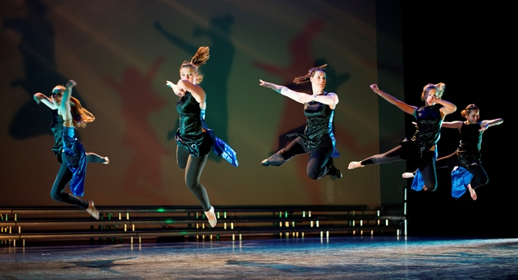
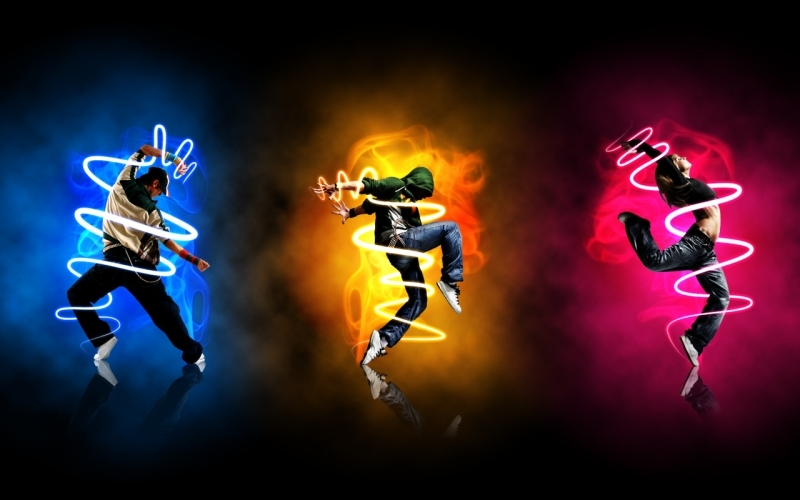
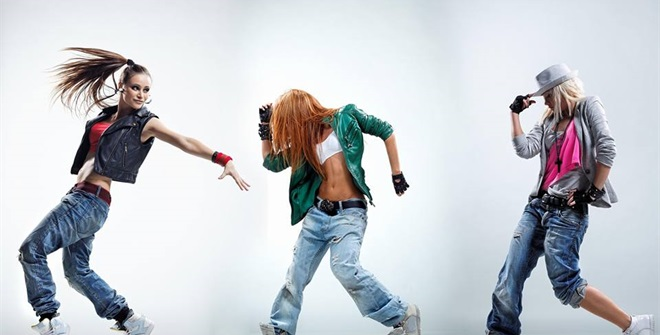
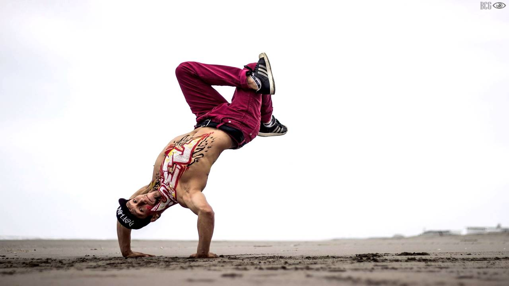

Jazz

Jazzdans is dynamisch, expressief, veelzijdig en continue in ontwikkeling!
Jazzdans is ontstaan als tegenhanger van het klassieke ballet, de bewegingen zijn losser en vrijer.
Typerend voor deze dansvorm zijn de isolaties (het geïsoleerd bewegen van één lichaamsdeel).
Invloeden van het klassieke ballet, mode110_DCHW2015__MG_8717-2rne stromingen en danstrends worden verwerkt in de dansen.
In Amerika werd jazzdans geformaliseerd door vernieuwers, dansers en choreografen zoals Jack Cole, Lester Horton, Bob Fosse en Alvin Ailey.
Jazz dans video
Hiphop

Hip Hop is eigenlijk een verzamelnaam voor een groot aantal dansstromingen.
Denk hierbij aan breakdance, urban dance, popping locking.
Onze hip hop lessen worden gegeven door Michell Hiwat die bekend staat om zijn eigen stijl.
Geen breakdance acrobatiek, maar vooral snelle en korte dansmoves die tot in de puntjes kloppen
met de muziek.
De hip hop lessen worden op zaterdagochtend gegeven.
Wij hebben een aantal niveau’s in de hip hop lessen van Michell.
Hiphop dans video
Streetdance

Sport- en Dansstudio Binnenmaas verzorgt danslessen voor meer dan 200 dansers.
In 2009 is Dance Center Hoekse Waard overgenomen van Hilda Wey.
Sindsdien zijn de lessen flink uitgebreid. Zo is er naast jazzdans nu ook hip hop, breakdance, musicaldans, klassiek ballet en worden er regelmatig workshops gegeven in salsa en merengue.
Streetdance video
Breakdance

Breakdance is ontstaan eind jaren 1970, begin jaren 1980 in de zwarte achterstandswijken in New York.
De dans heeft veel verschillende soorten bewegingen, grofweg ingedeeld in top rock (staand dansen), footwork (vanuit gehurkte positie), powermoves en freezes (poses).
Binnen break (en globaal bij hiphop) draait het om het hebben van een eigen stijl, originaliteit en expressie.
Breakdance battle